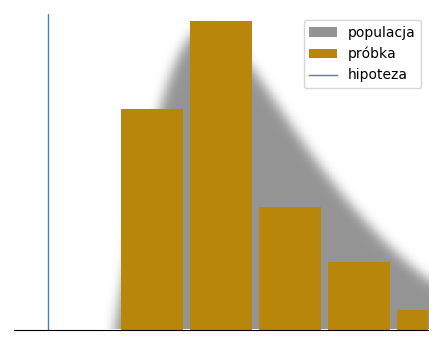
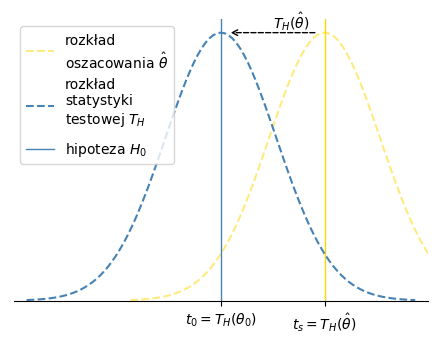
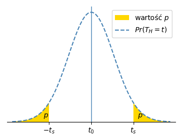
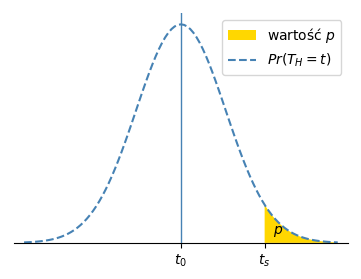
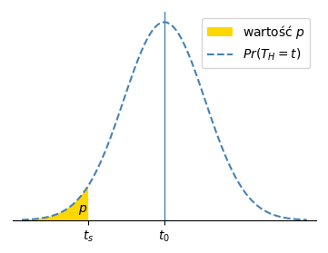

Test hipotezy statystycznej¶
Celem tego tekstu jest wyjaśnienie testu hipotezy statystycznej
| poziom | treść | daje zrozumienie | |
|---|---|---|---|
| 1 | Najważniejsze informacje |
|
|
| 2 | Elementy i sposoby użycia |
|
|
| 3 | Realizacja matematyczna |
|
|
W części matematycznej, poszczególne pojęcia / obiekty wyjaśnione są
- definicja opisowa
- cel / rola
- wzór / przekształcenia
i
Najważniejsze informacje¶
Definicja funkcjonalna¶
Test hipotezy statystycznej to narzędzie do odrzucania hipotez. Pozwala odrzucić ogólną hipotezę nt. pewnej populacji na podstawie konkretnej próbki obserwacji tej populacji. Hipoteza musi mieć charakter statystyczny, tzn. dotyczyć pewnej statystycznej cechy populacji, np. średniej wartości.
Te podstawowe elementy testu („informację wejściową”) przedstawia wykres poniżej:
Test jest
Zasada działania¶
W najprostszym ujęciu, test hipotezy statystycznej porównuje dwie wielkości.
Konfrontuje pewną wielkość postulowaną przez hipotezę
Kluczem do porównania próbki
Warto podkreślić, że to ten rozkład (żółta krzywa) porównuje się
Zastosowanie do wioskowania¶
Być może zaskakująco, częstym zastosowaniem testu statystycznego jest
potwierdzanie hipotez,
Potwierdzić zamiast dowodzi i odrzuca zamiast dowodzi fałszywości
to świadomy dobór słów. Hipoteza potwierdzona testem statystycznym
nie jest absolutnie dowiedziona,
Na opisane powyżej wnioskowanie można spojrzeć jak na probabilistyczną wersję dowodzenia przez sprzeczność:
Za pomocą testu statystycznego można zwykle potwierdzić tylko ogólną, szeroką
hipotezę (np. jakaś statystyczna wartość jest różna / większa / mniejsza
od \(0\)). Wąską hipotezę (np. wartość wynosi dokładnie \(x\)) trudno
potwierdzić, ponieważ wtedy hipoteza, którą należy odrzucić jest szeroka i trudno
Hipotezę odrzucaną
Przykład 1. Średni wzrost.
Pomiar wzrostu
W dalszej części tekstu określenie hipoteza oznacza zawsze hipotezę odrzucaną, tj. hipotezę zerową. Test statystyczny „widzi” tylko tę hipotezę.
TODO: ujęcie: Fisher, nie Neyman-Pearson.
Elementy i sposób użycia testu¶
Testowana wielkość¶
Testowana wielkość to cecha populacji,
Z definicji testu hipotezy statystycznej, testowana wielkość musi być
statystyczną cechą (funkcją parametru-/ów rozkładu) populacji, taką jak
np. wartość średnia. Również, musi być to wielkość, której oszacowanie
jest możliwe
Hipoteza¶
Hipoteza (zerowa) postuluje pewien zbiór wartości testowanej wielkości. Zazwyczaj jest to konkretna pojedyncza wartość (punktowa), lub wszystkie wartości mniejsze/większe niż określona wartość graniczna.
Hipoteza musi składać się dokładnie
- Testowana wielkość.
- np. średni wzrost
- np. średnia różnica długości snu między grupą 2
a grupą 1
- Postulowany zbiór jej wartości.
- np. 170 cm; lub np. między 165 cm
a 175 cm - np. 1h; lub np. 1h i więcej
- np. 170 cm; lub np. między 165 cm
Aby test dał statystycznie znaczący wynik, hipoteza musi postulować wartości
znacząco niezgodne
Próbka¶
Próbka jest zbiorem przykładów populacji, którą opisuje hipoteza i testowana wielkość. Zwykle próbka ma ograniczony rozmiar.
Aby test mógł potencjalnie odrzucić hipotezę, próbka musi dostarczać informacji
na jej temat. W szczególności, wielkości obserwowane
Przykład 1. Średni wzrost.
Informacja wejściowa¶
Podsumowując informacje dotąd, podstawowa „informacja wejściowa” dla testu to:
- hipoteza (zerowa) - postuluje określoną wartość (lub zbiór wartości) testowanej wielkości
- próbka obserwacji - dostarcza oszacowania testowanej wielkości
Parametrem implicite jest populacja, której dotyczy hipoteza i próbka. Nie
występuje jawnie, jedynie pośrednio
Uzupełniającymi parametrami testu są:
- poziom istotności \(\alpha\) (link) - akceptowany poziom ryzyka odrzucenia poprawnej hipotezy
- kierunkowość testu - możliwy wybór testu jednokierunkowego, jeśli hipoteza ma postać \(> x\) lub \(< x\)
Ponadto, wtórnymi parametrami testu są:
Powyższe parametry są wtórne, ponieważ wyznacza się je
Wynik¶
Podstawowym wynikiem testu jest
- Wartość p \(\in [0, 1]\) - ilościowa miara zgodności próbki
z hipotezą
Zazwyczaj przed wykonaniem testu dodatkowo określa się \(\alpha\) (link) - progową wartość \(p\), poniżej której hipotezę uznaje się za odrzuconą. Przy danym \(\alpha\), dodatkowe wyniki testu to:
- Rozstrzygnięcie hipotezy, wynik jakościowy:
odrzucenie hipotezy, gdy \(p \leq \alpha\)nieodrzucenie hipotezy, gdy \(p > \alpha\)
- Przedział ufności - oszacowanie zakresu zawierającego testowaną wielkość
Należy podkreślić, że nieodrzucenie hipotezy nie jest
Wartość \(p\)¶
Wartość p \(\in [0, 1]\) jest ilościową miarą zgodności próbki
Im mniejsza wartość \(p\), tym:
- mniejsza zgodność próbki
z hipotezą - mocniejsza przesłanka ku odrzuceniu hipotezy
- większa istotność statystyczna testu
Istnieje kilka powszechnie przyjętych progów wartości \(p\), odpowiednio małych,
takich, że ich uzyskanie
Ookreślenie „statystycznie istotny wynik” oznacza, że
Poziom istotności \(\alpha\)¶
Poziom istotności \(\alpha\) to parametr testu, określający maksymalne
akceptowane prawdopodobieństwo (ryzyko), że test błędnie odrzuci hipotezę.
„Błędnie odrzuci” to znaczy odrzuci
\(\alpha\) jest dobierana przez badacza przed wykonaniem testu i wyznacza statysyczną istotność wyniku, jeśli wynik wskazuje na odrzucenie hipotezy.
Przede wszystkim \(\alpha\) umożliwia właśnie rozstrzygnięcie, czy wynik testu wskazuje na odrzucenie hipotezy, tj. wynik jakościowy: „hipoteza jest / nie jest odrzucona”.
Rozstrzyga się to, porównując do \(\alpha\) wartość p:
- hipoteza jest odrzucona gdy \(p \leq \alpha\)
- hipoteza nie jest odrzucona gdy \(p > \alpha\)
Ten warunek odrzucenia hipotezy, porównanie \(p\) do \(\alpha\), spełnia definicję \(\alpha\), tj. gwarantuje, że prawdopodobieństwo odrzucenia błędnej hipotezy jest nie większe niż \(\alpha\). Wynika to z własności wartości p.
W konsekwencji, \(\alpha\) można rozumieć jako próg wartości \(p\). Należy jednak
pamiętać, że takie ujęcie to nie definicja,
Dobór \(\alpha\)¶
Dobór parametru \(\alpha\) oznacza pewien kompromis, ponieważ
| błąd | prawdopodobieństwo (ryzyko) błędu | kanoniczne określenie błędu |
|---|---|---|
| odrzucenie poprawnej hipotezy | \(\alpha\) | błąd I rodzaju
false positive
|
| nieodrzucenie błędnej hipotezy | \(\beta\) | błąd II rodzaju
false negative
|
Przedział ufności¶
Przedział ufności to oszacowanie przedziału,
Im większy współczynnik ufności, tym szerszy przedział, tj. mniej precyzyjne oszacowanie.
Związek między przedziałem ufności a wartością \(p\)¶
Przedział ufności i wartość \(p\) są alternatywnymi ujęciami tej samej informacji. W szczególności, hipotezę można rozstrzygnąć badając, czy przedział ufności zawiera wartość postulowaną hipotezą.
Warianty testu¶
Dwie populacje¶
Hipoteza może dotyczyć dwóch (w ogólności, dowolnej liczby) populacji. Wtedy
próbka to łączny zbiór próbek obu populacji,
Możliwe przypadki przedstawia tabela poniżej:
| populacja | próbka | testowana wielkość (przykład) | oszacowanie testowanej wielkości (przykład wzoru) | Przykład |
|---|---|---|---|---|
| 1 populacja | 1 próbka | średnia populacji | \(\bar X\) | 1. Średni wzrost |
| 2 niezależne populacje | 2 niezależne próbki | różnica między średnimi obydwu populacji | \(\bar Y - \bar X\) | 2. Różnica długości płatków |
| 2 zależne populacje | próbki sparowane [1] | średnia różnic między parami | \(\frac{1}{n}\displaystyle\sum_{i=1}^n(Y_i - X_i)\) | 3. Różnica długości snu |
| [1] | (każdej obserwacji |
Należy zwrócić uwagę, że niezależnie
Test jednokierunkowy i dwukierunkowy¶
Zależnie
Test dwukierunkowy to test uniwersalny, nadający się do wszystkich hipotez.
Test jednokierunkowy to test dopasowy do hipotezy, która ma postać - trochę
upraszczając - „coś jest mniejsze
Kierunkowość testu określa,
- Test dwukierunkowy nie czyni założeń co do kierunku. Za niezgodne
z hipotezą uznaje wartości zarówno dużo mniejsze jak i dużo większeod wartości postulowanej hipotezą. - Test jednokierunkowy zakłada określony kierunek. Jest wrażliwy tylko na
wartości
w kierunku przeciwnym do hipotezy. W kierunku zgodnymz hipotezą nie rozróżnia między wartościami. np. Dla hipotezy średni wzrost \(\mu \leq 170\), za niezgodnez hipotezą uznaje tylko wartości dużo większe od \(170\). Wszystkie wartości mniejsze od \(170\), nawet dużo mniejsze, np. \(\mu = 150\), są zgodnez hipotezą.
Zaletą testu jednokierunkowego jest, że
Wadą testu jednokierunkowego jest niewrażliwość na skrajne wartości
Różnicę między testem dwukierunkowym i jednokierunkowym pokazuje tabela poniżej:
| hipoteza | test | testowany zakres | zgodność |
|---|---|---|---|
| \(\theta = \theta_0\) | dwukierunkowy | \([-\infty, \infty]\) | TODO |
| \(\theta < \theta_0\) | dwukierunkowy | \([-\infty, \infty]\) | TODO |
| \(\theta < \theta_0\) | jednokierunkowy | \([\theta_0, \infty]\) (zał.) | TODO |
| \(\theta > \theta_0\) | dwukierunkowy | \([-\infty, \infty]\) | TODO |
| \(\theta > \theta_0\) | jednokierunkowy | \([-\infty, \theta_0]\) (zał.) | TODO |
Kierunkowość testu wpływa na obliczenie (wzory) wartości p i przedziału ufności.
Przykład 1. Średni wzrost.
Hipoteza „średni wzrost to 170 cm” jest punktowa, można do niej zastosować tylki test dwukierunkowy.
Procedura¶
Aby wykonać test hipotezy statystycznej, trzeba:
Zdefiniować hipotezę: testowaną wielkość i jej zbiór wartości.
- Przestawić próbkę jako zbiór liczb \(X\) (i \(Y\), jeśli dwie populacje)odpowiadająych testowanej wielkości.
Wybrać poziom istotności \(\alpha\).
Obliczyć wartość \(p\), zgodnie z algorytmem.
Porównać \(p\) z \(\alpha\) i stwierdzić nie-/odrzucenie hipotezy zerowej.
Przykład 1. Średni wzrost.
Przed wykonaniem testu określono akceptowane ryzyko odrzucenia prawdziwej
hipotezy \(\alpha = 0.05\). Test dał wynik \(p = 0.017 < \alpha\).
To pozwoliło odrzucić hipotezę zerową i potwierdzić wniosek zasugerowany
Przy czym, jedyny uprawomocniony wniosek
Patrz też pozostałe przykłady.
Matematyczna realizacja testu¶
Matematycznie, przyrównanie próbki do hipotezy polega na obliczeniu wartości \(p\). Ta część kolejno wyjaśnia elementy tego obliczenia.
Istota obliczenia wartości \(p\)¶
Najważniejsze elementy obliczenia wartości \(p\) (test dwukierunkowy).
Obliczenie wartości \(p\), miary zgodności próbki
- Sprowadzeniu próbki i hipotezy do postaci umożliwiającej bezpośrednie porównanie, odpowiednio do obrazu próbki i obrazu hipotezy.
- Odniesieniu obrazu próbki do obrazu hipotezy.
Postacią umożliwiającą bezpośrednie porównanie jest statystyka testowa \(T_H\) (link) , konstrukcja statystyczna łącząca próbkę i hipotezę, zmienna losowa.
- Obrazem hipotezy jest rozkład \(T_H\) (niebieska krzywa).
- Obrazem próbki jest wartość \(t_{s} = T_{H}(\hat \theta)\) (żółta linia),
wartość \(T_H\) dla oszacowania \(\hat \theta\) testowanej wielkości,
wyznaczonego
z próbki.
Odniesienie obrazu próbki do obrazu hipotezy polega na określeniu
prawdopodobieństwa wartości \(t_s\)
Wartość \(p\) można rozumieć jako alternatywny wyraz odległości \(\Delta t\) między
próbką
Algorytm obliczania wartości \(p\)¶
- Obliczyć oszacowanie \(\hat \theta\) testowanej wielkości orazoszacowanie \(s_{\hat \theta}\) odchylenia standardowego oszacowania \(\hat \theta\).
Zdefiniować statystykę testową \(T_H\) (jej wzór).
- Podstawić do wzoru \(T(\hat \theta\)) wartość testowanej wielkości
z hipotezy oraz powyższe oszacowanie \(s_{\hat \theta}\) odchylenia standardowego oszacowania \(\hat \theta\). - Określić znany rozkład na podstawie własności statystycznych próbki.
- Podstawić do wzoru \(T(\hat \theta\)) wartość testowanej wielkości
Obliczyć wartość statystyki testowej dla próbki \(t_s = T_H(\hat \theta)\).
Obliczyć wartość \(p = p(t_s)\), stosując wzór na \(p\) właściwy dla kierunku testu oraz podstawiając do wzoru rozkład statystyki testowej.
Przykład 1. Średni wzrost.
\(H_0: \theta_0 = 170\)
- \(T_H(\hat \theta) = \frac{\hat \theta - \theta_0}{s_{\hat \theta}} = \frac{\hat \theta - 170}{5.04}\)\(T_H(\hat \theta) =
z \sim \mathcal{N}(0, 1)\) (rozkład statystyki znany, z tabeli) \(t_s = T_H(\hat \theta) = T_H(181.94) = 2.36\)
- hipoteza dwukierunkowa \(\Rightarrow\) wzór na wartość \(p\):\(p = p(ts) = 2(1 - \Phi(t_s)) = 2(1 - \Phi(2.36)) = 2(1 - 0.991) = 0.017\)
Patrz też pozostałe przykłady.
Zależności między obiektami matematycznymi¶
Poniższy graf pokazuje zależnosći między obiektami. Do wyznaczenia dowolnego
obiektu potrzeba wszystkich obiektów bezpośrednio poprzedzających go
Statystyka testowa¶
Cel¶
Celem statystyki testowej jest umożliwić przyrównanie próbki do hipotezy.
W szczególności celem jest obliczenie prawdopodobieństwa, że populacja
Konstrukcja¶
Kluczowa idea statystyki testowej \(T\) to:
- Podsumowanie próbki, zbioru wielu punktów, w pojedynczej liczbie losowej,
o bardzo dobrze znanym rozkładzie. - Prawdopodobieństwo próbki pod hipotezą [2] jako miara zgodności próbki
z hipotezą.
| [2] | prawdopodobieństwo wygenerowania próbki |
Formalizując powyższe
\(T\) - liczba losowa - statystyka - odwzorowanie próbki
w liczbę Prawdopodobieństwo, że \(T\) przyjmie wartość \(t_s\) jest równe prawdopodobieństwu wygenerowana próbki pod hipotezą, tj.
\(Pr(T = t_s) = Pr(\) próbka \(|\) hipoteza \()\), \(t_s\) - wartość \(T\) dla próbki
Rozkład \(T\) jest znany pod hipotezą.
Wzór¶
Statystykę testową konstruuje się jako proste przekształcenie oszacowania \(\hat \theta\) testowanej wielkości. W ogólności
\(t_{s} = T(\hat \theta) = \frac{\hat \theta - \mu_{\theta}}{\sigma_{\theta}}\)
gdzie \(\mu_{\theta}\), \(\sigma_{\theta}\) - prawdziwe i nieznane parametry populacji, która wygenerowała próbkę i której dotyczy hipoteza.
W ten ogólny szablon wzoru,
Najczęściej do wzoru podstawia się następnie oszacowanie parametru/-ów
Przykład 1. Średni wzrost.
\(\mu_{\theta} = \theta_0\)
\(\sigma_{\theta} = s_{\hat \theta}\)
Ostatecznie statystyka testowa ma postać:
\(T_H(\hat \theta) = T(\hat \theta) \biggr\rvert_{H_0} = \frac{\hat \theta - \mu_{\theta}}{\sigma_{\hat \theta}} \biggr\rvert_{H_0} = \frac{\hat \theta - \theta_0}{s_{\hat \theta}} = \frac{\hat \theta - 170}{s_{\hat \theta}}\)
Po konkretnych podstawieniach, wzór daje szukaną statystykę testową \(T_H\), dobraną pod konkretną hipotezę \(H_0\).
Wyjaśnienie wzoru¶
Istotą \(T_H(\hat \theta) = \frac{\hat \theta - \theta_0}{s_{\hat \theta}}\)
jest przesunięcie oszacowania \(\hat \theta\)
Mowiąc obrazowo, przekształcenie \(T_H(\hat \theta)\) przesuwa rozkład \(\hat \theta\) na miejsce \(t_0 = T_H(\theta_{0})\) wskazane hipotezą.
Statystyka \(T_H\) odpowiada na pytanie „Jakie próbki byłyby obserwowane, gdyby populacja miała takie parametry, jak postuluje hipoteza?”.
Statystyka \(T_H\) wyraża prawdopodobieństwo próbki pod hipotezą \(H_0\).
Ściślej, \(T_H\) wyraża prawdopodobieństwo wygenerowania próbki dającej oszacowanie
Rozumowanie, które stoi za przekształceniem \(T_H(\hat \theta)\) to: „Aby wyznaczyć
prawdopodobieństwo próbki pod hipotezą, wyjdźmy
Wynikiem przekształcenia \(T_H(\hat \theta)\) jest zmienna losowa \(T_H\)
W ten sposób \(T_H\) przypisuje największe prawdopodobieństwo tym wartościom testowanej wielkości, które są najbliżej jej wartości postulowanej hipotezą - wartościom \(T_H(\hat \theta)\) takim, że \(\theta \approx \theta_{0}\).
Na powyższe przesunięcie można spojrzeć inaczej, mianowicie że przekształcenie
\(T_H(\hat \theta)\) zamienia miejscami próbkę i hipotezę, tak by test odnosił próbkę
do hipotezy,
Niezależnie
- \(T_H(\hat \theta)\) jest funkcją jednego argumentu - próbki,
danej
w postaci oszacowania \(\hat \theta\) testowanej wielkosćiz próbki. - \(T_H(\hat \theta)\) odnosi różne wartości próbki,
danej
w postaci oszacowania \(\hat \theta\) testowanej wielkości, do rozkładu prawdopodobieństwa tej wielkości pod hipotezą.
Nasuwa się zastrzeżenie, że rozkład \(T_H\),
Podsumowanie¶
\(T_H\) spełnia warunki konstrukcji 1. - 3. i pozwala na obliczenie wartości p.
- Odwzorowuje próbkę
w liczbę, jako funkcja oszacowania testowanej wielkości, które odwzorowuje próbkęw liczbę. - Wyraża prawdopodobieństwo pod hipotezą próbki danej
w postaci \(t_{s} = T_H(\hat \theta)\), zgodniez powyższym wyjaśnieniem. - Rozkład \(T_H\) jest znany pod hipotezą, bo \(T_H\) jest wynikiem przekształcenia
\(T_H(\hat \theta)\),
a rozkład \(\hat \theta\) jest znany, zbadany przez teorię statystyczną.
Warto potwórzyć, że zasadnicze cechy statystyki \(T_H\), te
Oszacowanie testowanej wielkości¶
Oszacowanie testowanej wielkości to prawdopodobna wartość tej wielkości
wyznaczona
Oszacowanie testowanej wielkości, a w szczególnosći pełna znajomość jego rozkładu, jest kluczowe dla testu. Rozkład oszacowania umożliwia zbudowanie statystyki testowej i obliczenie prawdopodobieństwa próbki pod hipotezą. Określenie rozkładu jest możliwe dzięki znajomości własności statystycznych próbki.
Gdy testowana wielkość \(\theta\) to średnia, to zależnie
| [3] | rozkład oszacowania \(\hat \theta\) |
| [4] | oszacowanie \({s_{\hat \sigma}}^2\) wariancji oszacowania \(\hat \theta\) |
| próbka \(\{X_n\}\) | populacja | \(\hat \theta\) [3] | \({s_{\hat \sigma}}^2\) [4] | statystyka testowa
\(T(\hat \theta) = \frac{\hat \theta - \mu_{\theta}}{s_{\hat \sigma}}\)
|
|---|---|---|---|---|
\(X_n \sim \mathcal{N}(\mu, \sigma^2)\)
znana wariancja \(\sigma^2\)
|
1 populacja | \(\mathcal{N}(\mu, {s_{\hat \sigma}}^2)\) | \(\frac{\sigma^2}{n}\) | \(z = \frac{\bar x - \mu_0}{(\sigma/\sqrt{n})} \sim \mathcal{N}(0, 1)\) |
\(X_n \sim \mathcal{N}(\mu, \sigma^2)\)
znana wariancja \(\sigma^2\)
|
2 populacje niezależne | \(\mathcal{N}(\mu, {s_{\hat \sigma}}^2)\) | \(\frac{{\sigma_x}^2}{n_x} + \frac{{\sigma_y}^2}{n_y}\) | \(z = \frac{\bar x - \mu_0}{\sqrt{\frac{{\sigma_x}^2}{n_x} + \frac{{\sigma_y}^2}{n_y}}} \sim \mathcal{N}(0, 1)\) |
\(n \geq 30\)
rozkład dowolny
|
1 populacja | \(\mathcal{N}(\mu, {s_{\hat \sigma}}^2)\) | \(\frac{s^2}{n}\) | \(z = \frac{\bar x - \mu_0}{(s/\sqrt{n})} \sim \mathcal{N}(0, 1)\) |
\(n \geq 30\)
rozkład dowolny
|
2 populacje niezależne | \(\mathcal{N}(\mu, {s_{\hat \sigma}}^2)\) | \(\frac{{s_x}^2}{n_x} + \frac{{s_y}^2}{n_y}\) | \(z = \frac{\bar y - \bar x - d_0}{\sqrt{\frac{{s_x}^2}{n_x} + \frac{{s_y}^2}{n_y}}} \sim \mathcal{N}(0, 1)\) |
\(n \geq 30\)
rozkład dowolny
|
2 populacje sparowane | \(\mathcal{N}(\mu, {s_{\hat \sigma}}^2)\) | \(\frac{{s_d}^2}{n}\) | \(z = \frac{\bar d - d_0}{(s_d/\sqrt{n})} \sim \mathcal{N}(0, 1)\) |
| \(X_n \sim \mathcal{N}\) | 1 populacja | \(t\) | \(\frac{s^2}{n}\) | \(t = \frac{\bar x - \mu_0}{(s/\sqrt{n})} \sim t(n-1)\) |
| \(X_n \sim \mathcal{N}\) | 2 populacje niezależne | \(t\) | \(\frac{{s_x}^2}{n_x} + \frac{{s_y}^2}{n_y}\) | \(t = \frac{\bar y - \bar x - d_0}{\sqrt{\frac{{s_x}^2}{n_x} + \frac{{s_y}^2}{n_y}}} \sim t(df_{\text{corr}})\) |
| \(X_n \sim \mathcal{N}\) | 2 populacje sparowane | \(t\) | \(\frac{{s_d}^2}{n}\) | \(t = \frac{\bar d - d_0}{(s_d/\sqrt{n})} \sim t(n-1)\) |
gdzie:
Przykład 1. Średni wzrost.
- rozmiar próbki \(n = 50 \geq 30\)
- wariancja populacji \(\sigma^2\) nieznana
- hipoteza dotyczy 1 populacji
więc (przypadek 3.
statystyka testowa to \(z \sim \mathcal{N}(0, 1)\) - znany rozkład
- oszacowanie wariancji \({s_{\hat \sigma}}^2\) oszacowania \(\hat \theta\),potrzebne do obliczenia statystyki testowej \(z\) ma wzór \({s_{\hat \sigma}}^2 = \frac{s^2}{n}\), więc\(s_{\hat \sigma} = \sqrt{\frac{s^2}{n}} = \sqrt{\frac{\frac{1}{n-1}\displaystyle\sum_{i=1}^n(x_i - \bar x)^2}{n}}\) (wzór na \(s^2\) pod tabelą)
Wartość \(p\), cd.¶
Definicja¶
Wartość p jest zdefiniowana jako prawdopodobieństwo uzyskania statystyki testowej \(T_H\) conajmniej tak nieprawdopodobnej, jak wartość statystyki testowej dla próbki pod hipotezą.
Geometrycznie, wartość \(p\) to powierzchnia zółtego obszaru na wykresie przedstawiającym obliczenie tej wartości.
Wzór¶
Ta definicja prowadzi do wzorów poniżej, zależnie od kierunku testu.
Test dwukierunkowy
\[\begin{split}\begin{align} p = p(t_s) &= 1 - 2 F_T(t_{s}) \\ &= 1 - 2 \Phi(t_{s}),\ \text{jeśli}\ F_T \sim \mathcal{N}(0, 1) \end{align}\end{split}\]Test jednokierunkowy \(H_0: \theta < x\)
\[\begin{split}\begin{align} p = p(t_s) &= 1 - F_T(t_{s}) \\ &= 1 - \Phi(t_{s}),\ \text{jeśli}\ F_T \sim \mathcal{N}(0, 1) \end{align}\end{split}\]Test jednokierunkowy \(H_0: \theta > x\)
\[\begin{split}\begin{align} p = p(t_s) &= F_T(t_{s}) \\ &= \Phi(t_{s}),\ \text{jeśli}\ F_T \sim \mathcal{N}(0, 1) \end{align}\end{split}\]
gdzie:
\(t_s\) - wartość statystyki testowej \(T_H\) dla próbki\(F_T\) - dystrybuanta rozkładu statystki \(T_H\)\(\Phi\) - dystrybuanta rozkładu normalnego \(\mathcal{N}(0, 1)\)
Wartość \(p\) jest bezpośrednio obliczana
Wyprowadzenie wzoru¶
Wartość \(p\) wyprowadza się
Zgodnie
Test dwukierunkowy
\(Pr(t)\) - rośnie
w zakresie \(t \in [-\infty, t_0]\), malejew zakresie \(t \in [t_0, \infty]\).\[\begin{split}\begin{align} \{t: Pr(t) \leq Pr(t_s)\} = \{t: |t| \leq |t_s|\} = [-\infty, -t_s] \cup [t_s, \infty] \\ p = p(t_s) = Pr(T_H \in [-\infty, -t_s] \cup [t_s, \infty]) = F_T(-t_s) + 1 - F_T(t_s) = 1 - 2 F_T(t_s) \end{align}\end{split}\]Test jednokierunkowy \(H_0: \theta < x\)
\(Pr(t)\) - maleje
w całym zakresie wartości, ograniczonym do \(t \in [t_0, \infty]\) przez założenie kierunkowości.\[\begin{split}\begin{align} \{t: Pr(t) \leq Pr(t_s)\} = \{t: t \geq t_s\} \\ p = p(t_s) = Pr(T_H \geq t_s) = 1 - F_T(t_s) \end{align}\end{split}\]Test jednokierunkowy \(H_0: \theta > x\)
- \(Pr(t)\) - rośnie
w całym zakresie wartości, ograniczonym do \(t \in [-\infty, t_0]\) przez założenie kierunkowości.
\[\begin{split}\begin{align} \{t: Pr(t) \leq Pr(t_s)\} = \{t: t \leq t_s\} \\ p = p(t_s) = Pr(T_H \leq t_s) = F_T(t_s) \end{align}\end{split}\]- \(Pr(t)\) - rośnie
Warto zwrócić uwagę, że wartość \(p\) i prawdopodobieństwo wartości \(t_s\) to dwa różne prawdopodobieństwa, dwóch różnych zmiennych losowych.
Interpretacja¶
Jeśli hipoteza \(H_0\) jest prawdziwa, \(p\) to odsetek próbek, dla których jest spełniony warunek \(p \leq \alpha\). Przyjmując ten warunek za warunek odrzucenia hipotezy \(H_0\), prawdopodobieństwo odrzucenia hipotezy wynosi \(p\). Przy założeniu, że \(H_0\) jest prawdziwa, odrzucenie jest błędne i \(p\) to prawdopodobieństwo błędnego odrzucenia hipotezy.
Przedział ufności, cd.¶
Wzór¶
Test dwukierunkowy
\[\hat \theta + s_{\hat \theta} F_T(\frac{\alpha}{2}) \leq \theta \leq \hat \theta + s_{\hat \theta} F_T(1 - \frac{\alpha}{2})\]Test jednokierunkowy
TODO
gdzie:
\(\theta\) - testowana wielkość, której dotyczy przedział\(\hat \theta\) - oszacowanie testowanej wielkości\({s_{\hat \theta}}^2\) - oszacowanie wariancji rozkładu oszacowania \(\hat \theta\)\(F_T\) - dystrybuanta rozkładu statystki \(T_H\)\(1 - \alpha\) - współczynnik ufności
Wyprowadzenie wzoru¶
Podstawiając \(\mu_{\theta} = \hat \theta\), \(\sigma_{\theta} = s_{\hat \theta}\):
Związek między \(\theta\), \(t_s\), \(p\) i przedziałami ufności¶
Warto pamiętać, że te \(\hat \theta\), \(t_s\), \(p\) [5] są równoważne, to trzy różne miary tej samej wielkości, czy też trzy różne rodzaje współrzędnych tej samej jednowymiarowej osi.
| [5] | \(p\) |
Przyjmując \(\alpha = 0.05\):
| \(\theta\) | \(\theta_{\alpha}^{-}\) | \(\theta_0\) | \(\hat \theta\) | \(\theta_{\alpha}^{+}\) |
| \(T\) | \(T_{\alpha}^{-}\) | \(0\) | \(t_s\) | \(T_{\alpha}^{+}\) |
| \(p_{<>}\) | \(5\%\) | \(100\%\) | wzór | \(5\%\) |
| \(p_{<}\) | \(-\infty\) | \(100\%\) | wzór | \(5\%\) |
| \(p_{>}\) | \(5\%\) | \(100\%\) | wzór | \(\infty\) |
| TODO | \(2.5\%\) | \(50\%\) | \(97.5\%\) |
Wykaz symboli¶
| symbol | pojęcie |
|---|---|
| \(H_0\) | hipoteza zerowa (odrzucana) |
| \(\theta\) | testowana wielkość; dotyczy jej hipoteza |
| \(\hat \theta\) | oszacowanie testowanej wielkości, |
| \(T_H\) | statystyka testowa |
| \(t_s\) | \(= T_H(\hat \theta)\), wartość statystyki testowej dla próbki |
| \(p\) | wartość p, ilościowa miara zgodności próbki |
| \(\alpha\) | poziom istotności, akceptowane ryzyko błędnego odrzucenia hipotezy |
| \(\mu_{\theta}\) | średnia wartość rozkładu testowanej wielkości, parametr populacji |
| \(\theta_0\) | postulowna hipotezą wartość testowanej wielkości |
| \({s_{\hat \theta}}^2\) | oszacowanie wariancji rozkładu oszacowania \(\hat \theta\) |
Przykłady¶
Przykład 2. Rożnica długości płatków.
Hipoteza potwierdzana: Średnia długość płatków setosa jest większa
- \(H_0\): \(\bar X_{\text{setosa}} \leq \bar X_{\text{virginica}}\)\(H_0\): \(\bar X_{\text{setosa}} - \bar X_{\text{virginica}} \leq 0 = \theta_0 = d_0\)
Wielkość testowana: \(\theta = \bar X_{\text{setosa}} - \bar X_{\text{virginica}}\)
- Próbka:\(\{X_{\text{setosa}}^{(n)}\} = \{...\}\ \) - \(\ 50\) obserwacji\(\{X_{\text{virginica}}^{(n)}\} = \{...\}\ \) - \(\ 50\) obserwacji
\(\alpha = 0.01\)
- Obliczenie wartości \(p\) w/g algorytmu:
- rozmiar próbki \(n = 50 \geq 30\)
- wariancja populacji \(\sigma^2\) nieznana
- hipoteza dotyczy 2 niezależnych populacji
\(\Rightarrow\ \) przypadek 4. w tabeli
- \(p = 1 > \alpha = 0.01\) - brak podstaw do odrzucenia hipotezy \(H_0\)